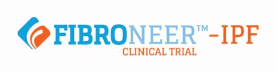
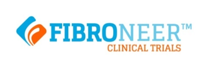

特発性肺線維症及び
進行性線維化を伴う間質性肺疾患に関する治験
本治験は、日本ベーリンガーインゲルハイム株式会社が実施する「特発性肺線維症（IPF）」及び「進行性線維化を伴う間質性肺疾患（PF-ILD）」の患者さんに対する新たな治療の候補薬であるBI
1015550という治験薬の安全性とそれぞれの疾患に対する有効性をプラセボ（見た目は治験薬と同じだが有効成分を含まない偽薬）と比較して調べるものです。
IPF及びPF-ILDに対する治療成績を引き上げるためには、新たなより有効性の高い治療薬を見つけることが必要です。
IPF及びPF-ILDに対する治療成績を引き上げるためには、新たなより有効性の高い治療薬を見つけることが必要です。
以下の基準を満たす患者さんは参加できる可能性があります：
- 特発性肺線維症（IPF）または進行性線維化を伴う間質性肺疾患（PF-ILD）と診断された方
- 年齢18歳以上（IPFの患者さんは40歳以上）
-
呼吸機能検査で
- ー努力肺活量が正常予測値の45%以上の方
- ー酸化炭素拡散能（肺のガス交換機能検査）が正常予測値の25%以上，90%未満の方
- 抗線維化薬で治療中の方，または治療を受けていない方
- 追加の治験参加基準を満たす方
参加に適していると判断された方は、治験薬またはIPF及びPF-ILDの標準治療薬である抗線維化薬の費用の負担なしに治療が受けられます。また、治験期間を通して治験関連の医学的評価を受けることができ、病状が詳しく観察されます。
本治験は、日本ベーリンガーインゲルハイム株式会社が実施する「特発性肺線維症（IPF）」及び「進行性線維化を伴う間質性肺疾患（PF-ILD）」の患者さんに対する新たな治療の候補薬であるBI
1015550という治験薬の安全性とそれぞれの疾患に対する有効性をプラセボ（見た目は治験薬と同じだが有効成分を含まない偽薬）と比較して調べるものです。
IPF及びPF-ILDに対する治療成績を引き上げるためには、新たなより有効性の高い治療薬を見つけることが必要です。


FIBRONEER-IPF.longboat.comにアクセスするか、 二次元コードをスキャンして IPF試験の詳細をご覧ください。
FIBRONEER-ILD.longboat.comにアクセスするか、 二次元コードをスキャンして
PF-ILD試験の詳細をご覧ください。
この治験への参加についてさらに詳しく知りたい方は、こちらまでご連絡ください

日本ベーリンガーインゲルハイム株式会社
Eメールアドレス：ctinfo@boehringer-ingelheim.com
電話番号：0120-189-779
受付時間：9:00～18:00 （土・日・祝日・弊社休日を除く）
Eメールアドレス：ctinfo@boehringer-ingelheim.com
電話番号：0120-189-779
受付時間：9:00～18:00 （土・日・祝日・弊社休日を除く）